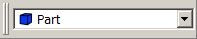
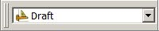
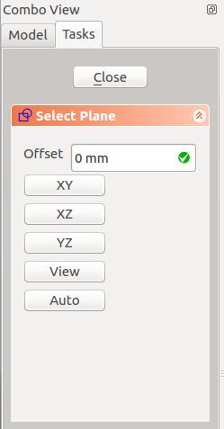
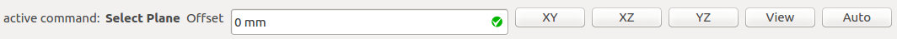

Basic modeling tutorial/en
| Topic |
|---|
| Introduction to modelling |
| Level |
| Beginner |
| Time to complete |
| 15 minutes |
| Authors |
| NormandC |
| FreeCAD version |
| any |
| Example files |
| none |
| See also |
| None |
Introduction
This Basic Modeling Tutorial will show you how to model an iron angle. One thing to know is that FreeCAD is modular by design, and like for many other CAD software, there are always more than one way to do things. We will explore two methods here.
This tutorial was written with version 0.15 of FreeCAD.
Modeling Techniques Intro
The first (and basic) technique of solid modeling is Constructive Solid Geometry (CSG). There is also a detailed explanation (in the context of FreeCAD) of Constructive_solid_geometry on the wiki. You work with primitive shapes like cubes, cylinders, spheres and cones to construct your geometry by combining them, subtracting one shape from the other, or intersecting them. These tools are part of the Part Workbench. You can also apply transformations on shapes, like applying rounds or chamfers on edges. These tools are also in the Part Workbench.
Then there are more advanced tools. You start by drawing a 2D profile which you'll either extrude or revolve.
So let's start by trying to do some iron feet for a table with these 2 methods.
1st Method - By Constructive Solid Geometry
- Start with the Part Workbench

. - If you haven't opened a new FreeCAD document (most of the FreeCAD window looks greyed-out), from the pull-down menu click File → New or click the Create a new empty document icon.
- Click on the
 Cube button to create a cube. Note: back when these captures were taken, cubes were named boxes.
Cube button to create a cube. Note: back when these captures were taken, cubes were named boxes. - Change its dimensions by selecting it either in the 3D space, or by clicking it in the Model tab to the left, then
- Click on the Data tab at the bottom, and change values for Length, Width and Height to 50mm, 50 and 750 (see Fig. 1.1) Note: in the past the properties were ordered differently, with Height being first.
- The cube now fills most of the 3D view. Click on Fit All to fit the view to the newly created cube.
- Create a second cube the same way, but with values L=40, W=40 and H=750mm. By default this cube will be superimposed on the first one. (see Fig. 1.2)
- You'll now subtract the second cube from the first. Select the first shape first (named Cube), then the second one (named Cube001), the selection order is important! (Make sure that both shapes are selected in the Project tree. One thing to remember: in Inventor navigation mode, Ctrl + click does not work for multiple selection. Switch Mouse navigation to either CAD or Blender selection.)
- On the Part Workbench toolbar, click on the Cut tool.


You now have your first iron angle (Fig. 1.3). You'll notice that, in the Model tab on the left, both cubes have been replaced by a "Cut" object. Actually, they're not disappeared, but rather grouped under the Cut object. Click on the + in front of it, and you'll see that both cubes are still there, but greyed out (Fig. 1.4). If you click on either of them and hit the Space bar, it will show up. The space bar toggles visibility of selected objects. (Fig. 1.5)
Don't want the angle oriented that way? You just need to change the placement of the Cube001 shape. Select it, unhide it, and in the Data tab, click on the + in front of Placement, then expand the Position parameter, and change its X and Y coordinates. Hit Enter, hide the Cube001 shape again, and your angle orientation is now different. (Fig. 1.5) You can even change either of your shapes dimensions, and the Cut object will be updated.


By the way, we can add rounds to the angle so it is more realistic, using the Fillet tool. (Fig. 1.6)


2nd Method - By extruding a profile
This method requires that you start by drawing a 2D profile. You need to activate the Draft workbench 

- If you haven't opened a new FreeCAD document (most of the FreeCAD window looks greyed-out), from the pull-down menu click File → New or click the Create a new empty document icon.
Setting the working plane
First we need to define on which working plane to draft our profile.
- Locate the toolbar displayed below. Depending on your Draft preferences, it may be below the main toolbar, to the left or to the right.
- Press the Auto button (it may be labeled "None").
- Depending on your Draft preferences, this expands a Select Plane dialog in the Tasks side panel, or a horizontal toolbar labeled "active command: Select Plane". See the Note on Draft Working Plane Button for screen captures showing the two expanded modes.
- We will leave the Offset field at a value of zero.
- Press the XY button to set the working plane to XY. This closes the Tasks panel or the expanded buttons. The "Auto" button will now be relabeled as "Top" to show it is the active plane.

Drafting the profile
- Select the Draft Wire (Polyline) tool.
- Check the "Relative" and "Filled" checkboxes.
- Rather than drawing the shape in the 3D view, we'll enter coordinates in the Global X, Global Y and Global Z input fields. The process is the following:
- Click in the Global X input field;
- Enter a value as listed in the bullet list below and press TAB to go to the Global Y input field;
- Enter the Global Y value and press TAB to go to the Global Z input field;
- In the Global Z field, leave the zero value and press ENTER to validate the coordinates for the point;
- Repeat for the next 5 points.
- Coordinates (X, Y, Z)
- 1st point: 0, 0, 0
- 2nd point: 50, 0, 0
- 3rd point: 0,10, 0
- 4th point: -40, 0, 0 Note: in FreeCAD 0.16, there is a bug that removes the previous point when entering the minus sign in the input field. A workaround is to enter a positive value, then place the cursor before the number and add the minus sign. (This bug is resolved in v0.17)
- 5th point: 0, 40, 0
- 6th point: -10, 0, 0
- Press the Close button to close the profile. You should now have this profile, titled DWire in the Model tab:


Hit the 0 (zero) key on the numerical keypad to set the view to axonometric.
Extruding the profile
Activate the  Part Workbench either from the workbench selector, or from the View → Workbench → Part menu.
Part Workbench either from the workbench selector, or from the View → Workbench → Part menu.
Click on the Extrude tool.

On the Tasks tab on the left, select the Wire object. Then enter the desired length, say 750mm. Leave the direction at Z = 1. Press OK. You should now have an Extrude object in the Model tab (fig. 1.8)

This method has a minor caveat compared to the other one: to edit the shape, you need to edit the Wire, it's not as easy to do as the previous method.
And there are a few other ways to do it too! I hope these two examples get you started. You'll sure hit some snags along the way (I did when I first learned FreeCAD, and I do have 3D CAD experience), but don't hesitate to ask questions on the FreeCAD forum!
Note on Draft Working Plane Button
The label on your button may be different, depending on your version and also on what you were doing beforehand. The button label could read: "Top", "Front", "Side", "None" or a Vector representation such as d(0.0,0.0,1.0). It can also be blank. For example:


After pressing the button, the options will be expanded into either of the following configurations.




The above instructions will work, no matter what label your button has.
- Creation and modification: New Sketch, Extrude, Revolve, Mirror, Scale, Fillet, Chamfer, Face From Wires, Ruled Surface, Loft, Sweep, Section, Cross-Sections, 3D Offset, 2D Offset, Thickness, Project on Surface, Appearance per Face
- Boolean: Compound, Explode Compound, Compound Filter, Boolean Operation, Cut, Union, Intersection, Connect Shapes, Embed Shapes, Cutout Shape, Boolean Fragments, Slice Apart, Slice to Compound, Boolean XOR, Check Geometry, Defeaturing
- Other tools: Box Selection, Shape From Mesh, Points From Shape, Convert to Solid, Reverse Shapes, Simple Copy, Transformed Copy, Shape Element Copy, Refine Shape, Set Tolerance, Persistent Section Cut, Attachment
- Preferences: Preferences, Fine tuning
- Getting started
- Installation: Download, Windows, Linux, Mac, Additional components, Docker, AppImage, Ubuntu Snap
- Basics: About FreeCAD, Interface, Mouse navigation, Selection methods, Object name, Preferences, Workbenches, Document structure, Properties, Help FreeCAD, Donate
- Help: Tutorials, Video tutorials
- Workbenches: Std Base, Assembly, BIM, CAM, Draft, FEM, Inspection, Material, Mesh, OpenSCAD, Part, PartDesign, Points, Reverse Engineering, Robot, Sketcher, Spreadsheet, Surface, TechDraw, Test Framework
- Hubs: User hub, Power users hub, Developer hub